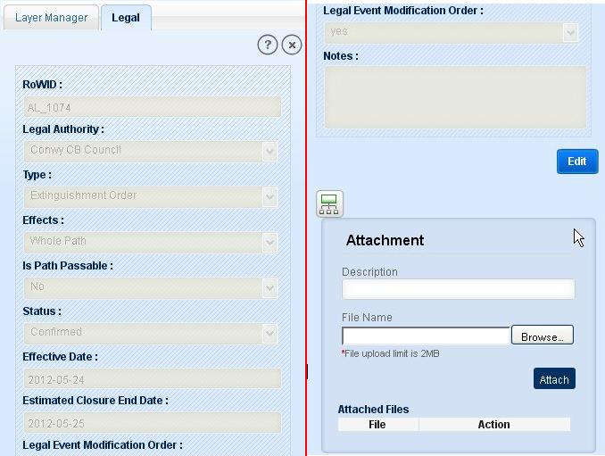

In legal module user is allowed to view/ create legal and edit legal details. Legal details can be viewed in Legal accordion from Path Links by clicking on Legal Id. In Work Commitment module form Open Issues accordion, click on Create/View Legal icon for legal details. In Path Links/Furniture Links/Surface Links/Access Land Links from Issue accordion click on Create/ View Legal icon for legal details.
To view legal details from Legal accordion of Path Links, click on legal id. From Issue part of Path Links/Furniture Links/Surface Links/Access Land Links or work commitment dashboard, click on Create/View icon present on last column of Issue details. If legal is created for that issue, application opens Legal tab in left panel with detailed information in read only format with Edit button and an attachment box.

Fig.1 Legal Details
To edit a legal details follow the below steps;
This tool allows user to view Issue details for which the legal is created. Click on Go to Parent Issue tool in Legal tab. Application opens Issue tab with issue details of issue associated with selected legal.
This functionality allows users to add files (up to 2MB) to the selected Legal. File could be of text type, image and other type. For this application displays an attachment box with the list of already attached files. Attachment box consists of a text box ‘Description’, Browse button as File name and Attach button.
To add an attachment:
To remove an attachment: